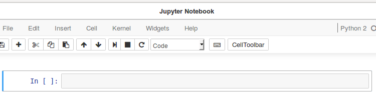
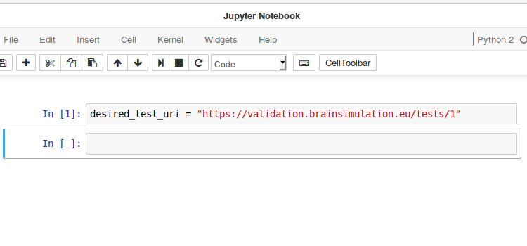
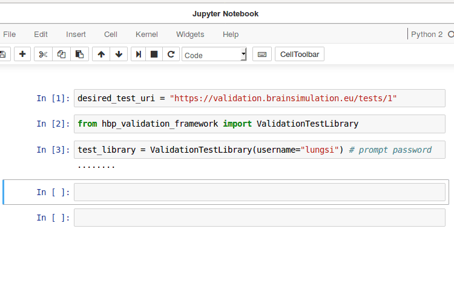
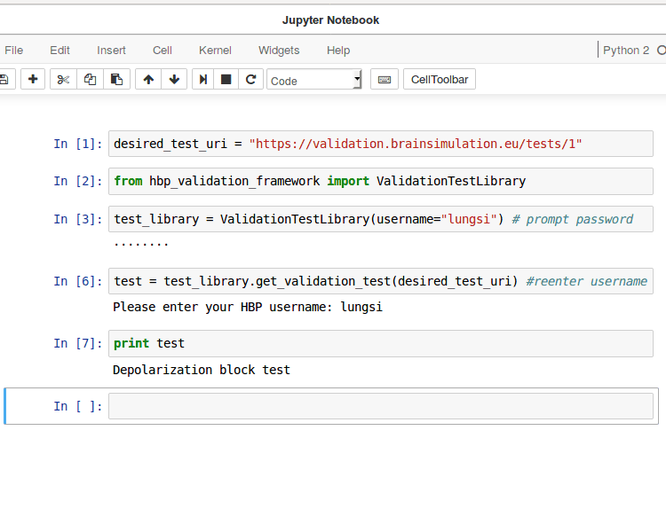

∙ Installation and Set-up.
∙ Choosing and Loading a Model.
∙ Choosing and Loading a Test.
∙ Running the Desired Validation Test On the Chosen Model.
∙ Store the Data of the Results and then Register.
∙ All the above from a python script.
Choosing and Loading a Desired Validation Test.

Purpose
From the HVF validation tests catalog you want to download test definitions of a particular chosen test.
How to.
Let us say we want to run the validation seen here. The link to this test is, https://validation.brainsimulation.eu/view/tests/1. This is the depolarization block test (see image).
The tabular view of the depolarization block test is derived from the test defined as the JavaScript Object Notation.
Webpage: https://validation.brainsimulation.eu/view/tests/1
JSON form: https://validation.brainsimulation.eu/tests/1
Therefore the metadata, i.e, a test definition in the HVF comprises:
- location of the coded test function, and
- location of the experimental data.

Therefore to later run the desired validation test, hippounit should be installed. This is done as follows>> !pwd>> /local/notebook>> !git clone https://github.com/apdavison/hippounitAbove step will create a directory 'hippounit', i.e, /local/notebook/hippounit. To check type>> lsAssuming you are in the parent directory of hippounit, type the command below to install hippounit >> !pip install ./hippounit |
|

For our desired test in the JSON form, we can call it as follows >> desired_test_uri = "https://validation.brainsimulation.eu/tests/1" |
|

However for this to be of any practical use in running the validation the above test URI must be broken down (i.e, dowload test definition) using the hbp-validation-framework as follows, Call the ValidationTestLibrary Class which has the methods for breaking down the test URI. Then login to the HBP Validation Test Library (you will need an account). >> from hbp_validation_framework import ValidationTestLibrary>> test_library = ValidationTestLibrary(username=" |
|

To answer What is the name of validation test with respect to the HBP test library? >> test = test_library.get_validation_test((desired_test_uri)) |
Therefore the data for validation is added and the validation test (v-test) itself is instantiated as a test (called Depolarization block test). The function 'test' is now ready to accept model into its argument and run this particular v-test (Depolarization block test).
|

Additionally (miscellaneous) if the user wants to know the platform on which you intend to run the validation test,>> print test_library.get_platform() |
Note that for this walkthrough (running validation test for some available hippocampal models) two packages are required.
- Package name: hippocampus_CA1_pyramidal
Package purpose: contains hippocampal model from which we can choose to run the validation-tests in the hippounit package. - Package name: hippounit
Package purpose: contains validation-test python functions.
The former package is loaded in Choosing and Loading a Model. and the later package is loaded here.
[Notice that the Blue Brain "hippounit" available in https://github.com/BlueBrain/neuronunit has been divided into two parts. Models in https://github.com/apdavison/hippocampus_CA1_pyramidal and Tests in https://github.com/apdavison/hippounit]